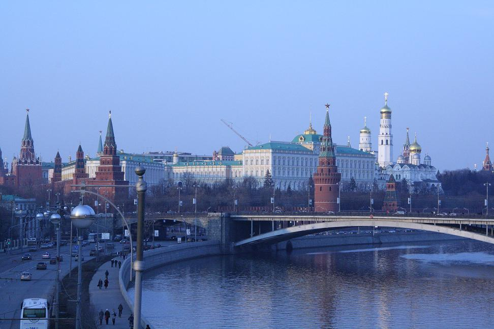

Сегодня в Москве работает более 150 театров, от прославленных «Ленкома» и «Современника» до молодых экспериментальных студий, которые, однако, с честью представляют Москвы на разнообразных театральных фестивалях.
В Москве более 200 музеев, включая знаменитую Третьяковскую галерею, изысканный музей имени Пушкина, отстроенный заново выставочный зал Манеж. Самые ценные сокровища России можно увидеть в Оружейной палате Московского Кремля. А уж сколько в городе частных галерей, специализирующихся на современном искусстве — и не сосчитать.
В Москве три киностудии, две телебашни, ведут вещание 24 региональных и федеральных телеканала. С 1702 года (с перерывом на годы советской власти) в Москве издается старейшая российская газета «Ведомости».
В архитектуре Москвы мирно уживаются классические особняки прошлых веков и высотки в хай-тек стиле, тихие зеленые дворики центра и оживленные магистрали (Москва, наверно единственный город мира, где даже ночью можно попасть в пробку).
Культурная жизнь не замирает ни днем, ни ночью. В темное время суток, например, её легко можно найти в районе Бульварного кольца, вдоль Тверской улицы и Арбата.